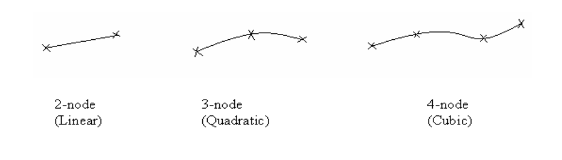
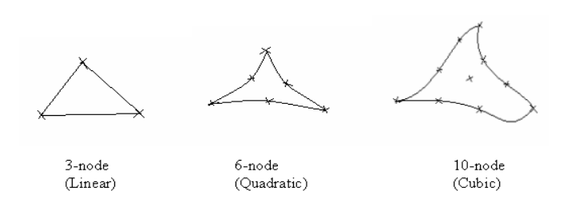
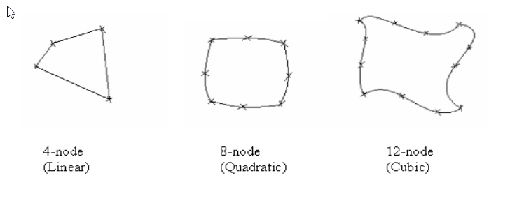
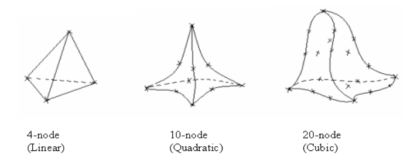
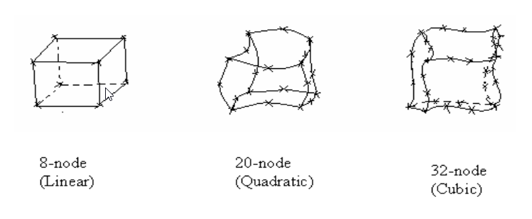
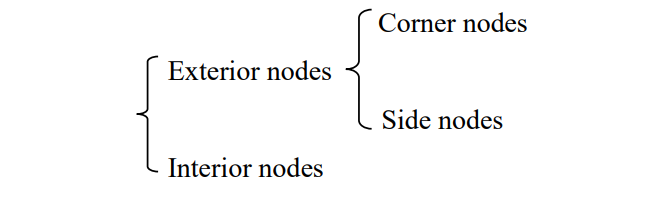

CH7 曲面建模 <<
Previous Next >> nx和solidworks電子書
CH8 有限元素分析
有限元件分析(FMA)是有限元件方法(FEM)實際運用的一種方式，
預測結構或流體對應用因素(例如力，壓力，熱量和振動。)
正常來說，第一步驟都是從創建幾何模型開始
然後將模型細分(網格化)為簡單的，小塊的幾何形狀(元素)在特定的節點上。
使材料屬性和邊界條件應用於每個元素。
最終，諸如NX 12之類的軟件解決了這個FEA問題，並輸出了結果和可視化效果。 它可以幫助工程師在製造和測試產品之前更好地了解其性能。
FEA的一些應用像是結構分析，熱分析，流體流動力學和電磁兼容性。
其中，FEA最常用於結構和固體力學應用中，以計算機械性能（例如應力和位移）。
這對工件的性能至關重要還有用來預測事故發生。
在本章中，我們將演示如何處理實體零件的結構應力和應變分析。
8.1 概述
8.1.1元素形狀和節點
元素基於維度的數量和元素中節點的數量可分為不同的類型。
以下是用於離散化的某些元素類型。 一維元素  二維元素 三角形:
 四邊形:
 三維元素 四面體(具有四個三角形面的實體):  六面體(具有6個四邊形面的實體):
 節點類型 
通常，隨著有限元件大小的改動，FEA能有更精確的解決方案，但是計算時間也會變長。
單字翻譯 node=節點 linear=線性 Quadratic=二次方的
Cubic=立方體 Exterior nodes=外部節點
Interior nodes=內部節點 corner nodes=角節點
Side nodes=側節點
CH7 曲面建模 <<
Previous Next >> nx和solidworks電子書